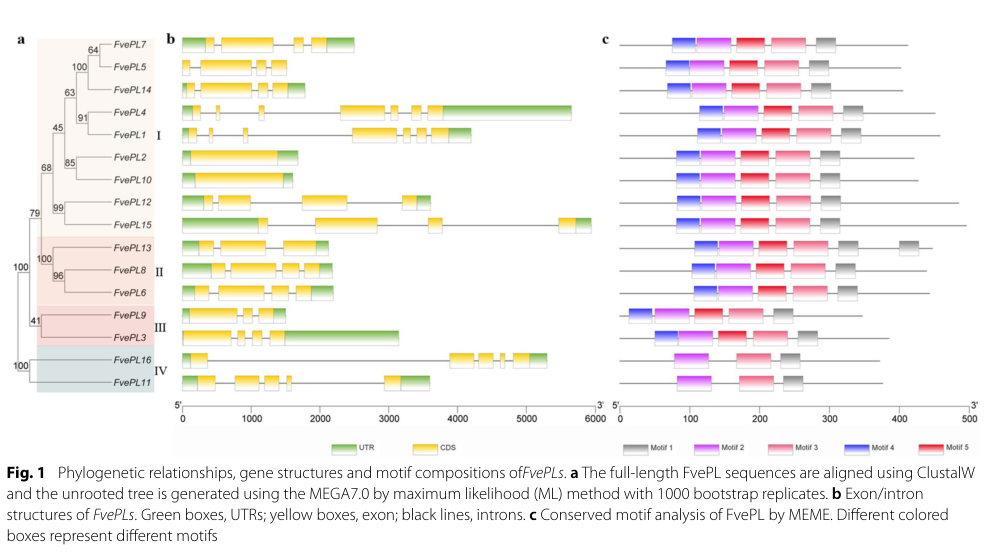

BRADI_1g22147v3 encodes a predicted pectate lyase, EC 4.2.2.2, in Brachypodium distachyon. The enzyme is expected to cleave demethylesterified homogalacturonan/pectate in the plant cell wall by beta-elimination.
| GO Term | Evidence | Action | Reason |
|---|---|---|---|
|
GO:0030570
pectate lyase activity
|
IBA
GO_REF:0000033 |
ACCEPT |
Summary: ACCEPT. Pectate lyase activity is the specific molecular function of this predicted enzyme.
Reason: The IBA call is consistent with the UniProt EC assignment and PANTHER pectate lyase subfamily placement. This is the specific molecular function expected for a polysaccharide lyase family 1 enzyme. Falcon did not find gene-specific Brachypodium experiments, so the support is family/mechanism inference rather than direct BRADI_1g22147v3 biochemistry.
Supporting Evidence:
file:BRADI/BRADI_1g22147v3/BRADI_1g22147v3-uniprot.txt
RecName: Full=Pectate lyase; EC=4.2.2.2.
file:BRADI/BRADI_1g22147v3/BRADI_1g22147v3-uniprot.txt
PANTHER; PTHR31683:SF113; PECTATE LYASE.
file:BRADI/BRADI_1g22147v3/BRADI_1g22147v3-deep-research-falcon.md
The report found no explicit BRADI_1g22147v3/A0A0Q3KVX9 literature, but PL1/pectate-lyase literature supports beta-elimination cleavage of low- or non-methylesterified homogalacturonan.
|
|
GO:0030570
pectate lyase activity
|
IEA
GO_REF:0000120 |
ACCEPT |
Summary: ACCEPT. The automated assignment agrees with the IBA and UniProt enzyme assignment.
Reason: This duplicates the IBA-supported enzyme activity but is not contradicted; both automated and phylogenetic evidence point to pectate lyase activity.
Supporting Evidence:
file:BRADI/BRADI_1g22147v3/BRADI_1g22147v3-uniprot.txt
RecName: Full=Pectate lyase; EC=4.2.2.2.
|
|
GO:0045490
pectin catabolic process
|
IEA
GO_REF:0000041 |
ACCEPT |
Summary: ACCEPT. UniPathway correctly adds plant cell-wall pathway context: a pectate lyase directly cleaves pectin/pectate polymers during pectin degradation.
Reason: This is direct pathway context for the enzyme activity, not a broad downstream phenotype. UniProt maps the protein to pectin degradation step 2/5, and the pectate lyase activity provides the mechanistic basis. The specific tissue and developmental context in Brachypodium remains unknown.
Supporting Evidence:
file:BRADI/BRADI_1g22147v3/BRADI_1g22147v3-uniprot.txt
PATHWAY: Glycan metabolism; pectin degradation; 2-dehydro-3-deoxy-D-gluconate from pectin: step 2/5.
file:BRADI/BRADI_1g22147v3/BRADI_1g22147v3-deep-research-falcon.md
Plant pectate lyase family evidence places the likely reaction in the apoplast/cell wall, but no BRADI_1g22147v3-specific expression, localization, mutant, or enzyme assay was recovered.
|
The research report should be a detailed narrative explaining the function, biological processes, and localization of the gene product. Citations should be given for all claims.
You should prioritize authoritative reviews and primary scientific literature when conducting research. You can supplement
this with annotations you find in gene/protein databases, but these can be outdated or inaccurate.
We are specifically interested in the primary function of the gene - for enzymes, what reaction is catalyzed, and what is the substrate specificity? For transporters, what is the substrate? For structural proteins or adapters, what is the broader structural role? For signaling molecules, what is the role in the pathway.
We are interested in where in or outside the cell the gene product carries out its function.
We are also interested in the signaling or biochemical pathways in which the gene functions. We are less interested in broad pleiotropic effects, except where these elucidate the precise role.
Include evidence where possible. We are interested in both experimental evidence as well as inference from structure, evolution, or bioinformatic analysis. Precise studies should be prioritized over high-throughput, where available.
The retrieved peer‑reviewed literature did not contain explicit mentions of the specific Brachypodium distachyon gene model BRADI_1g22147v3 or UniProt A0A0Q3KVX9. A corpus‑wide scan of the retrieved papers did not find these identifiers, so no gene‑specific experimental phenotype, expression, or localization evidence can be cited here. Accordingly, this report confines gene/protein identity to the user‑provided UniProt annotation (organism: B. distachyon; enzyme class: pectate lyase; EC 4.2.2.2; PL1/pectate‑lyase domains) and uses peer‑reviewed PL1/pectate‑lyase literature only for family- and mechanism‑supported inference, explicitly labeled as such. (zheng2018genomewideidentificationof pages 2-4)
Pectate lyases (often discussed within the broader “pectate lyase/pectate lyase‑like” or PLL group) cleave the pectin backbone polymer homogalacturonan (HG) by a β‑elimination mechanism rather than hydrolysis, generating products that carry a C4–C5 double bond (4,5‑unsaturation) at the newly formed non‑reducing end. This chemical hallmark distinguishes lyases from glycoside hydrolases such as polygalacturonases. (anderson2025thedynamicsdegradation pages 11-13, bonnin2020pectindegradingenzymes pages 50-52, bonnin2020pectindegradingenzymes pages 46-48)
In mechanistic terms, PLs are typically most active on non‑ or low‑methylesterified HG (pectate), often require Ca2+, and frequently show an alkaline pH optimum (~8.5). (anderson2025thedynamicsdegradation pages 11-13)
A central point for functional annotation is the difference between:
- Pectate lyases (PLs): preferentially act on non‑/low‑methylesterified HG; Ca2+ dependent; alkaline‑optimum. (anderson2025thedynamicsdegradation pages 11-13, bonnin2020pectindegradingenzymes pages 50-52)
- Pectin lyases (PNLs): preferentially act on highly methylesterified pectins; do not require Ca2+; acidic‑to‑neutral optimum (~pH 5.5–7.5). (anderson2025thedynamicsdegradation pages 11-13)
This difference is also reflected structurally: binding and active‑site composition differs in ways consistent with charged (low‑DM) vs more hydrophobic (high‑DM) substrates. (anderson2025thedynamicsdegradation pages 11-13)
Pectin backbones are cleaved in the cell wall/apoplast by hydrolytic enzymes and β‑elimination enzymes (lyases). Pectin is enriched in the middle lamella and primary wall, providing a spatial rationale for apoplastic pectin‑active enzymes during growth, adhesion, and remodeling. (anderson2025thedynamicsdegradation pages 7-8)
For annotation of BRADI_1g22147v3, this supports the inference that its primary functional compartment is the extracellular wall/apoplast, consistent with typical annotation pipelines that explicitly evaluate N‑terminal secretion signals in plant PLLs. (zheng2018genomewideidentificationof pages 2-4)
Given the UniProt description (pectate lyase; EC 4.2.2.2; PL1 family; pectate‑lyase fold domains) and the strongly conserved biochemical definition of EC 4.2.2.2 enzymes, the most defensible functional annotation is:
BRADI_1g22147v3 encodes a pectate lyase‑like enzyme that catalyzes β‑elimination cleavage of α‑1,4‑linked galacturonic‑acid residues in homogalacturonan (pectate), preferentially acting on non‑/low‑methylesterified pectin in the plant cell wall, generating 4,5‑unsaturated oligogalacturonides. (anderson2025thedynamicsdegradation pages 11-13, bonnin2020pectindegradingenzymes pages 50-52, bonnin2020pectindegradingenzymes pages 46-48)
By analogy to plant and microbial PLs, expected specificity is highest for demethylesterified or weakly methylesterified HG (pectate), with dependence on Ca2+ and alkaline conditions. (anderson2025thedynamicsdegradation pages 11-13, bonnin2020pectindegradingenzymes pages 50-52)
Because no BRADI_1g22147v3 biochemical assays were retrieved, this remains family-based inference rather than gene-specific evidence.
A 2024 Nature Communications study on oomycete pectate lyases reported conserved Asp residues (mutating conserved Asp to Ala reduced pectate‑lyase activity and abolished virulence-associated effects), illustrating that catalytic function can hinge on conserved acidic residues typical of PL active sites. (li2024aplantcell pages 2-4)
While this is not a plant protein, it provides up-to-date experimental confirmation that conserved acidic residues are mechanistically critical for PeL activity in PL1-like contexts.
Pectin remodeling and degradation are described as important drivers of changes in wall mechanics, adhesion, and developmental programming; the action of pectin‑modifying enzymes can affect both wall physical properties and generation of oligogalacturonides that can act as signaling ligands. (anderson2025thedynamicsdegradation pages 7-8)
Thus, BRADI_1g22147v3 most plausibly contributes to pectin remodeling in primary walls/middle lamella, impacting processes such as cell expansion, tissue separation, and developmental transitions.
Plant PLL families are often large and diversified. A recent synthesis reports gene family sizes across angiosperms (e.g., 26 PLLs in Arabidopsis, 46 in Brassica rapa, 86 in cotton, 65 in octoploid strawberry, and 12 in rice), and notes that isoforms frequently show tissue‑biased expression (e.g., vascular tissues). (anderson2025thedynamicsdegradation pages 8-9)
For grasses specifically, a rice genome-wide analysis used the conserved Pec_lyase_C domain (and sometimes Pec_lyase_N) to identify 12 OsPLL genes, reporting variable protein lengths and gene structures, and explicitly screening for signal peptides (a common indicator of secretion to the apoplast). (zheng2018genomewideidentificationof pages 4-6, zheng2018genomewideidentificationof pages 2-4)
These studies support the expectation that a Brachypodium PL1 family member could be one of many PLL paralogs with specialized developmental or stress-related roles.
A 2023 Fragaria vesca study provides a contemporary workflow for functional annotation of PL genes: HMM/Pfam identification of Pec_lyase_C, motif analysis, phylogeny, RNA-seq expression atlases, co-expression networks, and experimental validation including GFP localization and RNAi phenotypes. (huang2023genomewideidentificationand pages 2-4)
Key quantitative findings from this 2023 study (not in Brachypodium, but informative as a plant PL functional paradigm) include: RNAi of selected PL genes increased fruit firmness by ~38% and increased total pectin and water‑soluble pectin by 41.14% and 65.42%, respectively, linking PL activity to measurable pectin and tissue-mechanics phenotypes. (huang2023genomewideidentificationand pages 10-13)
A 2024 Nature Communications paper demonstrated that secreted pathogen pectate lyases are detectable in apoplastic fluid, contribute to virulence, and are directly targeted by plant extracellular immune regulators; importantly, enzymatic activity depended on conserved catalytic residues. (li2024aplantcell pages 1-2, li2024aplantcell pages 2-4)
Although pathogen PeLs differ from endogenous plant wall enzymes, this work underscores that pectate‑lyase activity in the apoplast is biologically impactful and that pectin‑derived oligomers can couple wall degradation to immune signaling.
Empirically, plant PL gene perturbation can alter wall polysaccharide solubilization and firmness (demonstrated in 2023 strawberry PL RNAi lines with quantifiable increases in firmness and pectin pools). This provides a direct example of how PL activity can be leveraged (or avoided) in crop-quality contexts, and suggests that grass PL/PLL genes could be candidate levers for modifying wall properties, albeit with species‑ and tissue‑specific effects. (huang2023genomewideidentificationand pages 10-13)
A monocot-focused cell-wall proteomics review emphasized that monocot/type II walls generally exhibit lower representation of pectin-related CW proteins than dicots, while compiling 1,159 CW proteins across monocot datasets and highlighting the need for more quantitative proteomics to infer abundance robustly. This positions grass pectin enzymes as present but potentially less abundant or more specialized—relevant for applications in grass biomass tailoring and cell-wall engineering strategies. (calderanrodrigues2019plantcellwall pages 12-14)
A high-authority, field-leading review (Annual Review of Plant Biology; 2025 publication, but synthesizing “recent advances”) provides consensus definitions and mechanistic distinctions between PLs and PNLs (substrate methylesterification dependence, Ca2+ dependence, pH optima, and structural determinants), and situates pectin remodeling as central to wall function and signaling. These points represent current expert consensus suitable for guiding careful functional annotation when gene-specific data are missing. (anderson2025thedynamicsdegradation pages 11-13, anderson2025thedynamicsdegradation pages 7-8)
Huang et al. (2023) provides visuals that exemplify the standard evidence used to annotate PL gene families: (i) phylogeny/gene structure/motif composition; and (ii) experimental subcellular localization using GFP fusions in protoplasts. (huang2023genomewideidentificationand media 083abceb, huang2023genomewideidentificationand media 736875c3)
| Claim/Topic | Key takeaway | Quantitative/statistical details | Best supporting source (citation id) | Publication year | URL |
|---|---|---|---|---|---|
| Target-family assignment for BRADI_1g22147v3 / A0A0Q3KVX9 | The UniProt annotation is consistent with a plant pectate lyase-like protein in polysaccharide lyase family 1 (PL1/PLL): plant PLLs are typically identified by the conserved Pec_lyase_C domain, sometimes with additional N-terminal regions and secretion signals; this is the appropriate family context for annotating the Brachypodium protein. | Rice PLL annotation framework identified 12 PLL genes; all carried a Pec_lyase_C domain, and a subset also carried Pec_lyase_N. Comparative analysis included Brachypodium sequences, supporting use of this framework for grass ortholog annotation. (zheng2018genomewideidentificationof pages 4-6, zheng2018genomewideidentificationof pages 2-4) | pqac-00000000 | 2018 | https://doi.org/10.1007/s00438-018-1466-x |
| Core enzymatic function | Pectate lyase (EC 4.2.2.2) cleaves homogalacturonan/pectate in the cell wall by a lyase, not hydrolase, mechanism. This supports annotating BRADI_1g22147v3 primarily as a pectin-remodeling/degrading enzyme. | Endo-PL = EC 4.2.2.2; exo-PL = EC 4.2.2.9. Substrates are α-1,4-linked galacturonic acid-rich homogalacturonan chains. (bonnin2020pectindegradingenzymes pages 50-52, anderson2025thedynamicsdegradation pages 7-8, bonnin2020pectindegradingenzymes pages 46-48) | pqac-00000003 | 2020 | https://doi.org/10.1007/978-3-030-53421-9_3 |
| Reaction mechanism | Plant/microbial pectate lyases cleave by β-elimination, generating a 4,5-unsaturated product at the nonreducing end rather than hydrolytic products. | Mechanistic hallmark: formation of a C4–C5 unsaturated bond in the product; distinguishes lyases from polygalacturonase hydrolases. (anderson2025thedynamicsdegradation pages 11-13, qianyue2024characterisationofpectate pages 24-30, bonnin2020pectindegradingenzymes pages 46-48) | pqac-00000002 | 2025 | https://doi.org/10.1146/annurev-arplant-083023-034055 |
| Substrate specificity: pectate lyase vs pectin lyase | Pectate lyases preferentially attack non- or low-methylesterified homogalacturonan (pectate), whereas pectin lyases act mainly on highly methylesterified pectin. This is central to predicting BRADI_1g22147v3 substrate preference. | PLs: active on low-DM pectin/pectate, usually Ca2+-dependent, alkaline optimum around pH ~8.5. PNLs: active on high-DM pectin, Ca2+-independent, acidic-to-neutral optimum ~5.5–7.5. (anderson2025thedynamicsdegradation pages 11-13, bonnin2020pectindegradingenzymes pages 50-52, bonnin2020pectindegradingenzymes pages 46-48) | pqac-00000002 | 2025 | https://doi.org/10.1146/annurev-arplant-083023-034055 |
| Catalytic/structural features supporting lyase annotation | Pectate lyase active sites are associated with acidic residues and Ca2+ coordination; this is compatible with domain-based annotation of BRADI_1g22147v3 as a canonical pectate lyase rather than a pectin lyase. | Review evidence notes PL active sites enriched for charged residues and three Asp residues involved in catalysis/Ca2+ coordination; a 2024 PeL study found seven conserved Asp residues, and Asp→Ala mutations reduced activity and virulence-associated function. (anderson2025thedynamicsdegradation pages 11-13, li2024aplantcell pages 2-4) | pqac-00000014 | 2024 | https://doi.org/10.1038/s41467-023-44356-y |
| Likely cellular localization | Pectate lyase activity relevant to plant development occurs in the extracellular cell wall/apoplast, especially around pectin-rich middle lamella/primary wall regions. BRADI_1g22147v3 is therefore most plausibly a secreted/apoplastic enzyme. | Rice PLL annotation pipelines explicitly assessed N-terminal signal peptides; pathogen and plant-related PeLs are detected in apoplastic fluid in functional studies. (zheng2018genomewideidentificationof pages 2-4, anderson2025thedynamicsdegradation pages 7-8, li2024aplantcell pages 1-2) | pqac-00000011 | 2024 | https://doi.org/10.1038/s41467-023-44356-y |
| Biological process context in plants | PLL/PL proteins contribute to cell wall remodeling linked to growth, tissue softening, vascular development, pollen function, and reproductive development; BRADI_1g22147v3 likely participates in a similar cell-wall remodeling process in Brachypodium. | Reported family sizes/roles: 26 PLLs in Arabidopsis, 46 in Brassica rapa, 86 in Gossypium hirsutum, 65 in octoploid strawberry, 12 in rice; many are expressed in vascular tissues, and others function in ripening, senescence, fiber elongation, and xylem modification. (anderson2025thedynamicsdegradation pages 8-9) | pqac-00000013 | 2025 | https://doi.org/10.1146/annurev-arplant-083023-034055 |
| Monocot-specific context | Monocots generally have fewer pectin-related cell wall proteins than dicots, but grasses still retain PLL family members; this fits a plausible but possibly more specialized pectin-remodeling role for BRADI_1g22147v3 in Brachypodium. | Review of monocot cell wall proteomics reported 1,159 CWPs across surveyed monocot datasets overall and emphasized relatively low representation of pectin-related CWPs in monocots; rice has 12 PLL genes. (calderanrodrigues2019plantcellwall pages 12-14, anderson2025thedynamicsdegradation pages 8-9) | pqac-00000007 | 2019 | https://doi.org/10.3390/ijms20081975 |
| Brachypodium-specific evidence status | Direct literature on BRADI_1g22147v3 itself appears limited. However, Brachypodium PLL sequences were included in grass comparative analyses, so annotation must rely mainly on UniProt/domain evidence plus family-level inference rather than gene-specific experiments. | No gene-specific expression/localization/phenotype for BRADI_1g22147v3 was extracted from the gathered literature; available comparative work confirms Brachypodium PLLs were part of phylogenetic datasets. (zheng2018genomewideidentificationof pages 2-4) | pqac-00000001 | 2018 | https://doi.org/10.1007/s00438-018-1466-x |
| Recent family-level evidence for developmental functions | Recent plant studies reinforce that PL genes often show strong tissue specificity and measurable developmental phenotypes, supporting cautious functional inference for uncharacterized homologs like BRADI_1g22147v3. | In Fragaria vesca, 16 PL genes were identified; RNAi of FvePL1/4/7 increased fruit firmness by ~38%, total pectin by 41.14%, and water-soluble pectin by 65.42%; reproductive PLs showed strong co-expression networks (up to 727 correlated genes). (huang2023genomewideidentificationand pages 2-4, huang2023genomewideidentificationand pages 1-2, huang2023genomewideidentificationand pages 10-13) | pqac-00000010 | 2023 | https://doi.org/10.1186/s12864-023-09533-9 |
Table: This table compiles the strongest available evidence supporting annotation of BRADI_1g22147v3/A0A0Q3KVX9 as a PL1-family pectate lyase, while clearly distinguishing direct Brachypodium evidence from broader plant family-level inference. It is useful for transparent functional annotation because it links each major claim to a specific citation, quantitative detail, and source URL.
References
(zheng2018genomewideidentificationof pages 2-4): Yinzhen Zheng, Junjie Yan, Shuzhen Wang, Meiling Xu, Keke Huang, Guanglong Chen, and Yi Ding. Genome-wide identification of the pectate lyase-like (pll) gene family and functional analysis of two pll genes in rice. Molecular Genetics and Genomics, 293:1317-1331, Jun 2018. URL: https://doi.org/10.1007/s00438-018-1466-x, doi:10.1007/s00438-018-1466-x. This article has 40 citations and is from a peer-reviewed journal.
(anderson2025thedynamicsdegradation pages 11-13): Charles T. Anderson and Jérôme Pelloux. The dynamics, degradation, and afterlives of pectins: influences on cell wall assembly and structure, plant development and physiology, agronomy, and biotechnology. Annual review of plant biology, Jan 2025. URL: https://doi.org/10.1146/annurev-arplant-083023-034055, doi:10.1146/annurev-arplant-083023-034055. This article has 50 citations and is from a domain leading peer-reviewed journal.
(bonnin2020pectindegradingenzymes pages 50-52): Estelle Bonnin and Jérôme Pelloux. Pectin degrading enzymes. ArXiv, pages 37-60, Jan 2020. URL: https://doi.org/10.1007/978-3-030-53421-9_3, doi:10.1007/978-3-030-53421-9_3. This article has 46 citations.
(bonnin2020pectindegradingenzymes pages 46-48): Estelle Bonnin and Jérôme Pelloux. Pectin degrading enzymes. ArXiv, pages 37-60, Jan 2020. URL: https://doi.org/10.1007/978-3-030-53421-9_3, doi:10.1007/978-3-030-53421-9_3. This article has 46 citations.
(anderson2025thedynamicsdegradation pages 7-8): Charles T. Anderson and Jérôme Pelloux. The dynamics, degradation, and afterlives of pectins: influences on cell wall assembly and structure, plant development and physiology, agronomy, and biotechnology. Annual review of plant biology, Jan 2025. URL: https://doi.org/10.1146/annurev-arplant-083023-034055, doi:10.1146/annurev-arplant-083023-034055. This article has 50 citations and is from a domain leading peer-reviewed journal.
(li2024aplantcell pages 2-4): Wen Li, Peng Li, Yizhen Deng, Junjian Situ, Zhuoyuan He, Wenzhe Zhou, Minhui Li, Pinggen Xi, Xiangxiu Liang, Guanghui Kong, and Zide Jiang. A plant cell death-inducing protein from litchi interacts with peronophythora litchii pectate lyase and enhances plant resistance. Nature Communications, Jan 2024. URL: https://doi.org/10.1038/s41467-023-44356-y, doi:10.1038/s41467-023-44356-y. This article has 44 citations and is from a highest quality peer-reviewed journal.
(anderson2025thedynamicsdegradation pages 8-9): Charles T. Anderson and Jérôme Pelloux. The dynamics, degradation, and afterlives of pectins: influences on cell wall assembly and structure, plant development and physiology, agronomy, and biotechnology. Annual review of plant biology, Jan 2025. URL: https://doi.org/10.1146/annurev-arplant-083023-034055, doi:10.1146/annurev-arplant-083023-034055. This article has 50 citations and is from a domain leading peer-reviewed journal.
(zheng2018genomewideidentificationof pages 4-6): Yinzhen Zheng, Junjie Yan, Shuzhen Wang, Meiling Xu, Keke Huang, Guanglong Chen, and Yi Ding. Genome-wide identification of the pectate lyase-like (pll) gene family and functional analysis of two pll genes in rice. Molecular Genetics and Genomics, 293:1317-1331, Jun 2018. URL: https://doi.org/10.1007/s00438-018-1466-x, doi:10.1007/s00438-018-1466-x. This article has 40 citations and is from a peer-reviewed journal.
(huang2023genomewideidentificationand pages 2-4): Xiaolong Huang, Guilian Sun, Zongmin Wu, Yu Jiang, Qiaohong Li, Yin Yi, and Huiqing Yan. Genome-wide identification and expression analyses of the pectate lyase (pl) gene family in fragaria vesca. BMC Genomics, Aug 2023. URL: https://doi.org/10.1186/s12864-023-09533-9, doi:10.1186/s12864-023-09533-9. This article has 14 citations and is from a peer-reviewed journal.
(huang2023genomewideidentificationand pages 10-13): Xiaolong Huang, Guilian Sun, Zongmin Wu, Yu Jiang, Qiaohong Li, Yin Yi, and Huiqing Yan. Genome-wide identification and expression analyses of the pectate lyase (pl) gene family in fragaria vesca. BMC Genomics, Aug 2023. URL: https://doi.org/10.1186/s12864-023-09533-9, doi:10.1186/s12864-023-09533-9. This article has 14 citations and is from a peer-reviewed journal.
(li2024aplantcell pages 1-2): Wen Li, Peng Li, Yizhen Deng, Junjian Situ, Zhuoyuan He, Wenzhe Zhou, Minhui Li, Pinggen Xi, Xiangxiu Liang, Guanghui Kong, and Zide Jiang. A plant cell death-inducing protein from litchi interacts with peronophythora litchii pectate lyase and enhances plant resistance. Nature Communications, Jan 2024. URL: https://doi.org/10.1038/s41467-023-44356-y, doi:10.1038/s41467-023-44356-y. This article has 44 citations and is from a highest quality peer-reviewed journal.
(calderanrodrigues2019plantcellwall pages 12-14): Maria Juliana Calderan-Rodrigues, Juliana Guimarães Fonseca, Fabrício Edgar de Moraes, Laís Vaz Setem, Amanda Carmanhanis Begossi, and Carlos Alberto Labate. Plant cell wall proteomics: a focus on monocot species, brachypodium distachyon, saccharum spp. and oryza sativa. International Journal of Molecular Sciences, 20:1975, Apr 2019. URL: https://doi.org/10.3390/ijms20081975, doi:10.3390/ijms20081975. This article has 50 citations.
(huang2023genomewideidentificationand media 083abceb): Xiaolong Huang, Guilian Sun, Zongmin Wu, Yu Jiang, Qiaohong Li, Yin Yi, and Huiqing Yan. Genome-wide identification and expression analyses of the pectate lyase (pl) gene family in fragaria vesca. BMC Genomics, Aug 2023. URL: https://doi.org/10.1186/s12864-023-09533-9, doi:10.1186/s12864-023-09533-9. This article has 14 citations and is from a peer-reviewed journal.
(huang2023genomewideidentificationand media 736875c3): Xiaolong Huang, Guilian Sun, Zongmin Wu, Yu Jiang, Qiaohong Li, Yin Yi, and Huiqing Yan. Genome-wide identification and expression analyses of the pectate lyase (pl) gene family in fragaria vesca. BMC Genomics, Aug 2023. URL: https://doi.org/10.1186/s12864-023-09533-9, doi:10.1186/s12864-023-09533-9. This article has 14 citations and is from a peer-reviewed journal.
(qianyue2024characterisationofpectate pages 24-30): ML QIANYUE. Characterisation of pectate lyase pelq1 from saccharobesus litoralis. Unknown journal, 2024.
(huang2023genomewideidentificationand pages 1-2): Xiaolong Huang, Guilian Sun, Zongmin Wu, Yu Jiang, Qiaohong Li, Yin Yi, and Huiqing Yan. Genome-wide identification and expression analyses of the pectate lyase (pl) gene family in fragaria vesca. BMC Genomics, Aug 2023. URL: https://doi.org/10.1186/s12864-023-09533-9, doi:10.1186/s12864-023-09533-9. This article has 14 citations and is from a peer-reviewed journal.

id: A0A0Q3KVX9
gene_symbol: BRADI_1g22147v3
product_type: PROTEIN
status: DRAFT
taxon:
id: NCBITaxon:15368
label: Brachypodium distachyon
description: >-
BRADI_1g22147v3 encodes a predicted pectate lyase, EC 4.2.2.2, in
Brachypodium distachyon. The enzyme is expected to cleave demethylesterified
homogalacturonan/pectate in the plant cell wall by beta-elimination.
existing_annotations:
- term:
id: GO:0030570
label: pectate lyase activity
evidence_type: IBA
original_reference_id: GO_REF:0000033
review:
summary: >-
ACCEPT. Pectate lyase activity is the specific molecular function of this
predicted enzyme.
action: ACCEPT
reason: >-
The IBA call is consistent with the UniProt EC assignment and PANTHER
pectate lyase subfamily placement. This is the specific molecular
function expected for a polysaccharide lyase family 1 enzyme. Falcon did
not find gene-specific Brachypodium experiments, so the support is
family/mechanism inference rather than direct BRADI_1g22147v3 biochemistry.
supported_by:
- reference_id: file:BRADI/BRADI_1g22147v3/BRADI_1g22147v3-uniprot.txt
supporting_text: 'RecName: Full=Pectate lyase; EC=4.2.2.2.'
- reference_id: file:BRADI/BRADI_1g22147v3/BRADI_1g22147v3-uniprot.txt
supporting_text: 'PANTHER; PTHR31683:SF113; PECTATE LYASE.'
- reference_id: file:BRADI/BRADI_1g22147v3/BRADI_1g22147v3-deep-research-falcon.md
supporting_text: >-
The report found no explicit BRADI_1g22147v3/A0A0Q3KVX9 literature, but
PL1/pectate-lyase literature supports beta-elimination cleavage of
low- or non-methylesterified homogalacturonan.
- term:
id: GO:0030570
label: pectate lyase activity
evidence_type: IEA
original_reference_id: GO_REF:0000120
review:
summary: >-
ACCEPT. The automated assignment agrees with the IBA and UniProt enzyme
assignment.
action: ACCEPT
reason: >-
This duplicates the IBA-supported enzyme activity but is not
contradicted; both automated and phylogenetic evidence point to pectate
lyase activity.
supported_by:
- reference_id: file:BRADI/BRADI_1g22147v3/BRADI_1g22147v3-uniprot.txt
supporting_text: 'RecName: Full=Pectate lyase; EC=4.2.2.2.'
- term:
id: GO:0045490
label: pectin catabolic process
evidence_type: IEA
original_reference_id: GO_REF:0000041
review:
summary: >-
ACCEPT. UniPathway correctly adds plant cell-wall pathway context: a
pectate lyase directly cleaves pectin/pectate polymers during pectin
degradation.
action: ACCEPT
reason: >-
This is direct pathway context for the enzyme activity, not a broad
downstream phenotype. UniProt maps the protein to pectin degradation step
2/5, and the pectate lyase activity provides the mechanistic basis. The
specific tissue and developmental context in Brachypodium remains unknown.
supported_by:
- reference_id: file:BRADI/BRADI_1g22147v3/BRADI_1g22147v3-uniprot.txt
supporting_text: 'PATHWAY: Glycan metabolism; pectin degradation; 2-dehydro-3-deoxy-D-gluconate from pectin: step 2/5.'
- reference_id: file:BRADI/BRADI_1g22147v3/BRADI_1g22147v3-deep-research-falcon.md
supporting_text: >-
Plant pectate lyase family evidence places the likely reaction in the
apoplast/cell wall, but no BRADI_1g22147v3-specific expression,
localization, mutant, or enzyme assay was recovered.
references:
- id: GO_REF:0000033
title: Annotation inferences using phylogenetic trees
findings: []
- id: GO_REF:0000041
title: Gene Ontology annotation based on UniPathway vocabulary mapping
findings: []
- id: GO_REF:0000120
title: Combined Automated Annotation using Multiple IEA Methods
findings: []
- id: file:BRADI/BRADI_1g22147v3/BRADI_1g22147v3-uniprot.txt
title: UniProt record for BRADI_1g22147v3
findings:
- statement: >-
UniProt names A0A0Q3KVX9 as pectate lyase, EC 4.2.2.2, and lists pectin
degradation pathway context.
- id: file:BRADI/BRADI_1g22147v3/BRADI_1g22147v3-deep-research-falcon.md
title: Falcon deep research for BRADI_1g22147v3
findings:
- statement: >-
Falcon deep research for BRADI_1g22147v3 found no direct gene-specific
literature. It supports pectate lyase activity by family/mechanistic
evidence: PL1 enzymes cleave low- or non-methylesterified
homogalacturonan/pectate by beta-elimination, generating unsaturated
oligogalacturonides, typically in the plant cell wall/apoplast.
core_functions:
- description: >-
Catalyzes pectate/pectin cleavage as a pectate lyase in plant cell-wall
pectin catabolism.
molecular_function:
id: GO:0030570
label: pectate lyase activity
directly_involved_in:
- id: GO:0045490
label: pectin catabolic process
supported_by:
- reference_id: file:BRADI/BRADI_1g22147v3/BRADI_1g22147v3-uniprot.txt
supporting_text: >-
RecName: Full=Pectate lyase; EC=4.2.2.2. PATHWAY: Glycan metabolism;
pectin degradation.
- reference_id: file:BRADI/BRADI_1g22147v3/BRADI_1g22147v3-deep-research-falcon.md
supporting_text: >-
Falcon deep research supports pectate lyase activity and pectin catabolic
process as family-based reaction/pathway context, while explicitly noting
no BRADI_1g22147v3-specific expression, localization, mutant, or
biochemical evidence was recovered.
{kind=link}